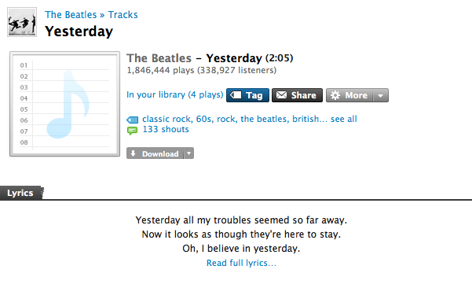

Last.fm adds lyrics

This gives lots of results:
When visiting the song page at Last.fm you are now given an excerpt of the lyrics, with a link to the full lyrics.

Here's the lyric detail page:
The lyrics are a result of a partnership between Last.fm and LyricFind. The press release says over 800,000 lyrics have been included.
Last.fm has done a nice job of integrating the lyrics into the website, but it would be nice if they could get them integrated into their standalone player. It would also be really neat if they could start to include lyric similarity into their computation of artist and track similarity. I'd like to be able to build playlists and radio stations based upon lyric similarity. (I did some experiments along these lines a while back with fun results).

{kind=link}
{kind=link}
Sadly this feature is not available for my country (Colombia)...
(...the same for Spotify )
Posted by dersteppenwolf on October 09, 2008 at 05:35 AM EDT #
Is it me, but I can't find any lyrics on the last.fm site anywhere..
I'm in the UK btw
tom
Posted by Tom Smith on November 12, 2008 at 09:26 AM EST #